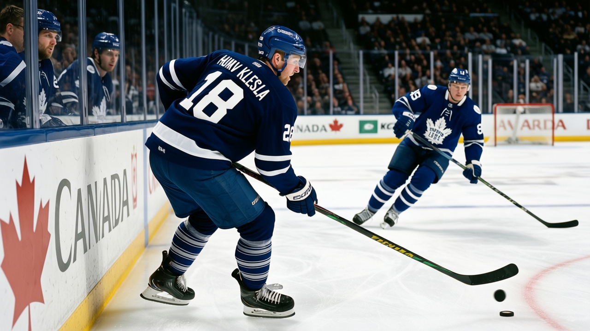

TOR
TORYoung Guns Watch: Klesla at 22, 19 points, and the Index says he is still climbing
Rostislav Klesla has played all 31 games, put up 19 points, and the Development Index has him up 5. He is the quiet story on this team.
 Sam OkaforLeafs beat reporter · Queen City Telegram
Sam OkaforLeafs beat reporter · Queen City Telegram
 Rostislav Klesla81 is 22. He has played all 31 games this season, 14.7 minutes a night, 19 points, 16 of them assists. The Bureau's Development Index has him at +5, his base of 78 reading 81. His potential is 97.
Rostislav Klesla81 is 22. He has played all 31 games this season, 14.7 minutes a night, 19 points, 16 of them assists. The Bureau's Development Index has him at +5, his base of 78 reading 81. His potential is 97.
He plays the third pair, left side. When Svehla and Salo are dressed, he gets 14.7 minutes. When they are not, the number goes up. He has been the third-pair lefty all year, and the minutes have been steady.
What the Index is saying
The Development Index tracks form, the distance between a player's current overall and his base. Klesla is up 5, reading 81 against a base of 78. In a league where most players are flat, that is an unusual year. He is the third Toronto player on the risers list, behind  Marian Gaborik95 at +6 and
Marian Gaborik95 at +6 and  Rick Nash80 at +5, and ahead of
Rick Nash80 at +5, and ahead of  Brad Richards84 at +4.
Brad Richards84 at +4.
19 points at 22, 97 potential, +5 on the Index, and $0.90M a year. Two years left on the deal. A general manager should notice that line.
The context
The Leafs' defensive depth has been the question all season. Svehla won the Norris last year and is 35. Salo is 30. McCabe is 29. Fischer is 24. Klesla is 22. Eminger is 21. Colaiacovo is 21.
The next 40 games will show whether that 97 is real. The Index has him at +5, the sheet shows 19 points, the cap says $0.90M, the age says 22. It is the story that does not make the headline or move the panic meter. It has been there all season.